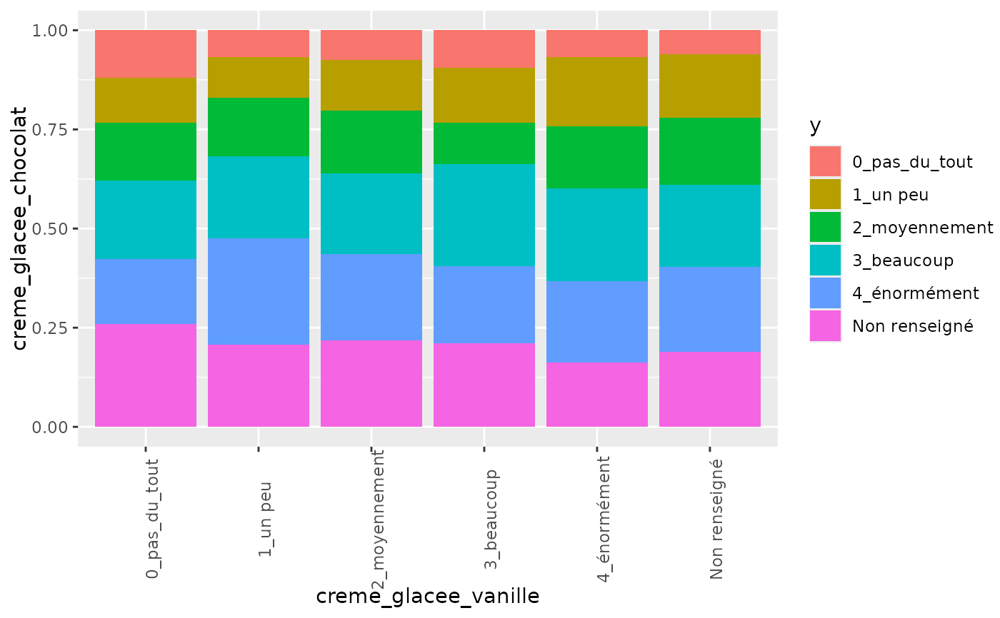
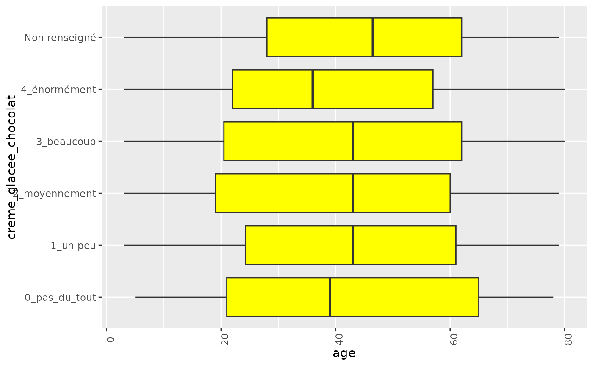
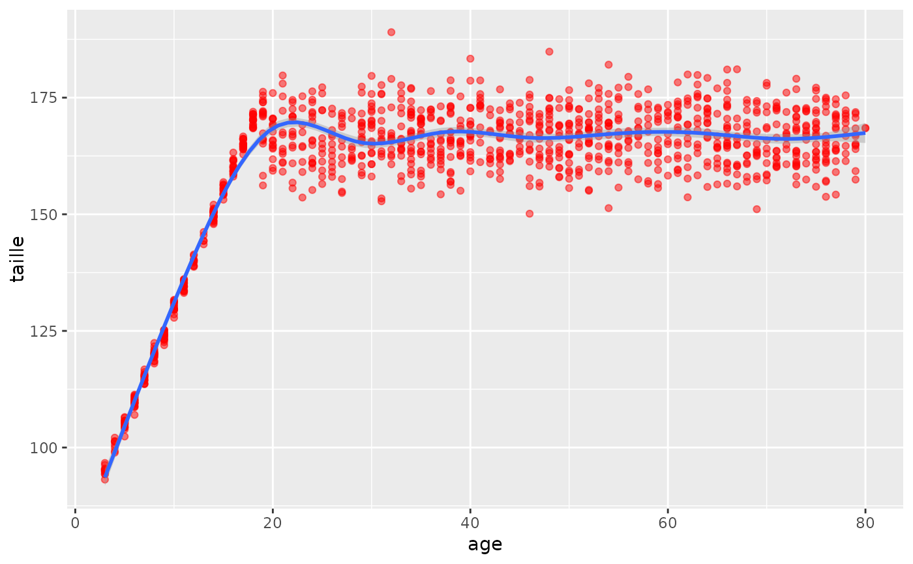

Assesses the types of variables (quantitative or qualitative) for a bivariate analysis
bivar_type.RdAssesses the types of variables (quantitative or qualitative) for a bivariate analysis
Examples
# example code
data(icecream)
biplot(icecream,"creme_glacee_vanille","creme_glacee_chocolat")
#> [1] 0.2572761
#> ***:<0.001, **:<0.01, *:<0.05, .:<0.1, not significant:>0.1

biplot(icecream,"age","creme_glacee_chocolat")
#> Warning: There were 79 warnings in `dplyr::summarise()`.
#> The first warning was:
#> ℹ In argument: `y = mean(y, na.rm = T)`.
#> ℹ In group 1: `x = 3`.
#> Caused by warning in `mean.default()`:
#> ! argument is not numeric or logical: returning NA
#> ℹ Run `dplyr::last_dplyr_warnings()` to see the 78 remaining warnings.
#> [1] 0
#> ***:<0.001, **:<0.01, *:<0.05, .:<0.1, not significant:>0.1
#> Warning: Removed 150 rows containing non-finite outside the scale range
#> (`stat_boxplot()`).
#> Warning: Removed 79 rows containing missing values or values outside the scale range
#> (`geom_point()`).

biplot(icecream,"age","taille")
#> [1] 5.8417e-115
#> ***:<0.001, **:<0.01, *:<0.05, .:<0.1, not significant:>0.1
#> `geom_smooth()` using formula = 'y ~ x'
#> Warning: Removed 340 rows containing non-finite outside the scale range
#> (`stat_smooth()`).
#> Warning: Removed 340 rows containing missing values or values outside the scale range
#> (`geom_point()`).
